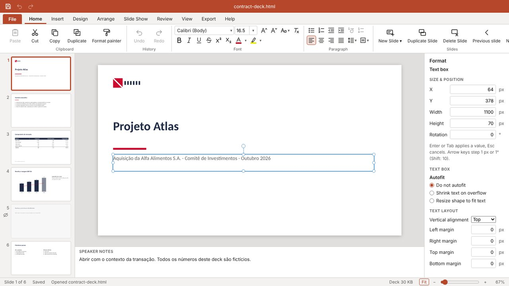

Slides création / édition · repo externe
Un éditeur de présentations type PowerPoint livré en un seul fichier HTML, qui fonctionne hors ligne. Pensé pour retoucher les decks HTML générés par une IA (Copilot, Claude…) : déplacer des blocs, corriger un graphique, présenter, exporter en PDF / PNG / PowerPoint.

| Contrôle | Résultat |
|---|---|
| Binaire livré = code source | ✓ dist/editor.html reconstruit avec build.py : identique octet pour octet. |
| Dépendance tierce | ✓ PptxGenJS 4.0.1 (MIT, embarque JSZip) : hash identique au paquet officiel npm. |
| Réseau | ✓ CSP default-src 'none'; connect-src 'none'. Aucun fetch / XHR / WebSocket / beacon dans le code de l'éditeur. |
| Code dynamique | ✓ Pas de eval, new Function, import(), Worker, Service Worker. |
| Decks non fiables | ✓ Iframes sandbox sans allow-scripts ; import qui retire scripts, on*=, javascript:, iframes ; liens en liste blanche. |
| Test dynamique | ✓ Deck piégé (scripts, onerror, iframe, CSS/images distantes) : 0 script exécuté, 0 requête sortie. |
| Stockage partagé | ! Brouillons en IndexedDB sur le domaine du site : pour un deck confidentiel, télécharger l'éditeur et l'ouvrir en local. |
| Maturité | ! Repo de 3 semaines, un seul auteur : commit figé, toute mise à jour repasse par l'audit. |
| Samples | ! Seul contract-deck.html est copié ; le sample « messy » charge des CDN et n'est pas inclus. |